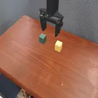
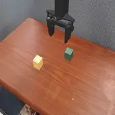
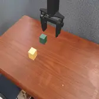
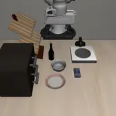
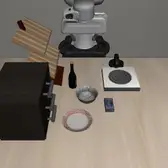
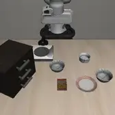

494 эпизодов в метриках · n=1 повтор на (сцена × вариант × модель)
Всё остальное в этом отчёте имеет смысл только если харнесс корректен. Самая
прямая проверка — прогнать en_canonical и сравнить с тем, что
авторы моделей заявляют сами. Наш набор сцен не совпадает с их бенчмарком,
поэтому это ориентир, а не построчное воспроизведение; но порядок величины
должен сходиться.
| наш en_canonical | заявлено авторами | вердикт | источник | |
|---|---|---|---|---|
| GreenVLA-R0 | 0/4 = 0% [0;49] | 33.3% success / 91.7% pick Cubes, SimplerEnv WidowX | не проверяемо (n=4, CI шире 40 п.п.) | arXiv:2602.00919, Table 4; зафиксировано в .claude/skills/slava-greenvla |
| GreenVLA-R1 (bridge) | 1/4 = 25% [5;70] | 72.9% SimplerEnv WidowX Bridge, entire average | не проверяемо (n=4, CI шире 40 п.п.) | GreenVLA model card / paper; зафиксировано в .claude/skills/slava-greenvla |
| GreenVLA-R2 (bridge, RL-aligned) | 1/4 = 25% [5;70] | 80.5% entire / 94.5% partial SimplerEnv WidowX Bridge | не проверяемо (n=4, CI шире 40 п.п.) | HF model card SberRoboticsCenter/GreenVLA-5b-stride-1-R2-bridge; зафиксировано в .claude/skills/slava-greenvla |
| OpenVLA-OFT | 15/16 = 94% [72;99] | ~97% их собственная оценка этого же чекпойнта на LIBERO | совпадает (в CI) | openvla-oft (moojink), LIBERO.md / OFT paper; зафиксировано в .claude/skills/slava-openvla-oft |
| SmolVLA | 1/18 = 6% [1;26] | — | нет опубликованного числа | не зафиксировано, см. pi0 |
| pi0 | 1/16 = 6% [1;28] | — | нет опубликованного числа | не зафиксировано: авторского числа именно для lerobot/pi0_libero_finetuned на нашем наборе сцен у нас нет |
| pi0.5 | 0/16 = 0% [0;19] | — | нет опубликованного числа | не зафиксировано, см. pi0 |
Как это читать. OpenVLA-OFT воспроизводится — значит пайплайн (сброс среды, подача наблюдений, детекция успеха) работает, и его кросс-язычные числа можно интерпретировать. У остальных моделей воспроизведение либо не подтверждается на нашем объёме сцен, либо опубликованного числа для этой конфигурации нет; их SR нельзя сравнивать с авторским напрямую, и языковые выводы по ним ограничены.
env.check_success()Вычитание gap_en_paraphrase — ключевой контроль: он убирает эффект
«инструкция просто непривычная» и оставляет только языковой.
Сравнение парное. Каждый вариант сравнивается с
en_canonical и en_paraphrase только на тех сценах, которые
есть у всех трёх («парных сцен» в таблице). Иначе разница в составе сцен
читалась бы как языковой эффект: например ru_case_swap осмыслен лишь
на 8 сценах из 20 (у остальных axis_na), и его маргинальный SR
относится к другому, более узкому набору задач, чем SRen_canonical.
CI по SR — интервал Уилсона (корректен у краёв 0% и 100%); по Δlang —
парный бутстрап (2000 итераций, ресэмплируются сцены, а не эпизоды, чтобы
исходы одной сцены двигались вместе). p — точный тест Мак-Немара
против en_canonical по дискордантным парам; прочерк означает, что
дискордантных пар нет вовсе, то есть данных для суждения нет — это не то же самое,
что «различий нет».
Оговорка о метриках. final_relation_success в этом
пилоте тождественно равен success (проверено: совпадает во всех 550
эпизодах): у каждой сцены ровно один success-предикат, и это буквально тот же
предикат, который проверяет нативный env.check_success(). Поэтому
отдельной колонкой «relation success» он не выводится — это было бы то же число
под другим именем.
| en_canonical | en_paraphrase | mt_russian | ru_literal | ru_case_swap | ru_negation | code_switch | |
|---|---|---|---|---|---|---|---|
| GreenVLA-R0 | 0/4 0% [0;49] | 0/4 0% [0;49] | 0/4 0% [0;49] | 0/4 0% [0;49] | 0/4 0% [0;49] | 0/4 0% [0;49] | 0/3 0% [0;56] |
| GreenVLA-R1 (bridge) | 1/4 25% [5;70] | 2/4 50% [15;85] | 0/4 0% [0;49] | 0/4 0% [0;49] | 0/4 0% [0;49] | 0/4 0% [0;49] | 2/4 50% [15;85] |
| GreenVLA-R2 (bridge, RL-aligned) | 1/4 25% [5;70] | 1/4 25% [5;70] | 0/4 0% [0;49] | 0/4 0% [0;49] | 0/4 0% [0;49] | 0/4 0% [0;49] | 0/4 0% [0;49] |
| OpenVLA-OFT | 15/16 94% [72;99] | 15/16 94% [72;99] | 9/16 56% [33;77] | 9/16 56% [33;77] | 4/4 100% [51;100] | 8/15 53% [30;75] | 14/16 88% [64;97] |
| SmolVLA | 1/18 6% [1;26] | 0/19 0% [0;17] | 0/19 0% [0;17] | 0/18 0% [0;18] | 0/6 0% [0;39] | 0/17 0% [0;18] | 0/17 0% [0;18] |
| pi0 | 1/16 6% [1;28] | 1/16 6% [1;28] | 0/16 0% [0;19] | 0/16 0% [0;19] | 0/4 0% [0;49] | 0/15 0% [0;20] | 0/16 0% [0;19] |
| pi0.5 | 0/16 0% [0;19] | 0/16 0% [0;19] | 0/16 0% [0;19] | 0/16 0% [0;19] | 0/4 0% [0;49] | 0/15 0% [0;20] | 0/16 0% [0;19] |
ru_case_swap — намеренно перевёрнутая инструкция
(«поставь жёлтый на зелёный» при success-предикате «зелёный на жёлтом»).
Модель, выполнившая её верно, засчитывается как провал: это зонд на
чувствительность к порядку, а не задача. В агрегат по модели не входит.
| вариант | парных сцен | gap, п.п. | Δlang, п.п. [95% CI] | p (McNemar) |
|---|---|---|---|---|
| mt_russian | 4 | +0.0 | +0.0 [+0;+0] | — |
| ru_literal | 4 | +0.0 | +0.0 [+0;+0] | — |
| ru_case_swap | 4 | +0.0 | +0.0 [+0;+0] | — |
| ru_negation | 4 | +0.0 | +0.0 [+0;+0] | — |
| code_switch | 3 | +0.0 | +0.0 [+0;+0] | — |
| вариант | парных сцен | gap, п.п. | Δlang, п.п. [95% CI] | p (McNemar) |
|---|---|---|---|---|
| mt_russian | 4 | +25.0 | +50.0 [+0;+100] | 1.000 |
| ru_literal | 4 | +25.0 | +50.0 [+0;+100] | 1.000 |
| ru_case_swap | 4 | +25.0 | +50.0 [+0;+100] | 1.000 |
| ru_negation | 4 | +25.0 | +50.0 [+0;+100] | 1.000 |
| code_switch | 4 | -25.0 | +0.0 [-75;+75] | 1.000 |
| вариант | парных сцен | gap, п.п. | Δlang, п.п. [95% CI] | p (McNemar) |
|---|---|---|---|---|
| mt_russian | 4 | +25.0 | +25.0 [+0;+75] | 1.000 |
| ru_literal | 4 | +25.0 | +25.0 [+0;+75] | 1.000 |
| ru_case_swap | 4 | +25.0 | +25.0 [+0;+75] | 1.000 |
| ru_negation | 4 | +25.0 | +25.0 [+0;+75] | 1.000 |
| code_switch | 4 | +25.0 | +25.0 [+0;+75] | 1.000 |
| вариант | парных сцен | gap, п.п. | Δlang, п.п. [95% CI] | p (McNemar) |
|---|---|---|---|---|
| mt_russian | 16 | +37.5 | +37.5 [+12;+62] | 0.031 |
| ru_literal | 16 | +37.5 | +37.5 [+12;+62] | 0.031 |
| ru_case_swap | 4 | +0.0 | +0.0 [+0;+0] | — |
| ru_negation | 15 | +40.0 | +40.0 [+13;+67] | 0.031 |
| code_switch | 16 | +6.2 | +6.2 [+0;+19] | 1.000 |
| вариант | парных сцен | gap, п.п. | Δlang, п.п. [95% CI] | p (McNemar) |
|---|---|---|---|---|
| mt_russian | 17 | +5.9 | +0.0 [+0;+0] | 1.000 |
| ru_literal | 17 | +5.9 | +0.0 [+0;+0] | 1.000 |
| ru_case_swap | 6 | +0.0 | +0.0 [+0;+0] | — |
| ru_negation | 16 | +6.2 | +0.0 [+0;+0] | 1.000 |
| code_switch | 16 | +6.2 | +0.0 [+0;+0] | 1.000 |
| вариант | парных сцен | gap, п.п. | Δlang, п.п. [95% CI] | p (McNemar) |
|---|---|---|---|---|
| mt_russian | 16 | +6.2 | +6.2 [+0;+19] | 1.000 |
| ru_literal | 16 | +6.2 | +6.2 [+0;+19] | 1.000 |
| ru_case_swap | 4 | +0.0 | +0.0 [+0;+0] | — |
| ru_negation | 15 | +6.7 | +6.7 [+0;+20] | 1.000 |
| code_switch | 16 | +6.2 | +6.2 [+0;+19] | 1.000 |
| вариант | парных сцен | gap, п.п. | Δlang, п.п. [95% CI] | p (McNemar) |
|---|---|---|---|---|
| mt_russian | 16 | +0.0 | +0.0 [+0;+0] | — |
| ru_literal | 16 | +0.0 | +0.0 [+0;+0] | — |
| ru_case_swap | 4 | +0.0 | +0.0 [+0;+0] | — |
| ru_negation | 15 | +0.0 | +0.0 [+0;+0] | — |
| code_switch | 16 | +0.0 | +0.0 [+0;+0] | — |
Самое дешёвое возражение к результату — «у вас просто неестественный
русский». Проверяется прямо: mt_russian — сырой выход DeepL без
единой правки, ru_literal — вручную выверенный вариант, прошедший
native check. Сравнение на общих сценах. Последняя колонка — средняя длина в
токенах (токенизатор OpenVLA-OFT): заодно контроль на то, что падение не
объясняется просто более длинным промптом.
| общих сцен | mt_russian (сырой MT) | ru_literal (человек) | p (McNemar) | токенов: MT vs человек | |
|---|---|---|---|---|---|
| GreenVLA-R0 | 4 | 0/4 | 0/4 | нет расхождений 0 из 4 | 18.0 vs 17.0 |
| GreenVLA-R1 (bridge) | 4 | 0/4 | 0/4 | нет расхождений 0 из 4 | 18.0 vs 17.0 |
| GreenVLA-R2 (bridge, RL-aligned) | 4 | 0/4 | 0/4 | нет расхождений 0 из 4 | 18.0 vs 17.0 |
| OpenVLA-OFT | 16 | 9/16 | 9/16 | нет расхождений 0 из 16 | 18.3 vs 15.0 |
| SmolVLA | 18 | 0/18 | 0/18 | нет расхождений 0 из 18 | 18.3 vs 15.2 |
| pi0 | 16 | 0/16 | 0/16 | нет расхождений 0 из 16 | 18.3 vs 15.0 |
| pi0.5 | 16 | 0/16 | 0/16 | нет расхождений 0 из 16 | 18.3 vs 15.0 |
SR говорит только «получилось/нет». Первый объект, которого робот реально коснулся, различает три разные неудачи: потянулся к верному объекту и не справился физически; потянулся не к тому (ошибка заземления); не тронул ничего. Это и есть slot-level атрибуция, ради которой строился бенчмарк.
| вариант | n | верный target | не тот объект | не коснулся вовсе |
|---|---|---|---|---|
| en_canonical | 4 | 0% | 0% | 100% |
| en_paraphrase | 4 | 0% | 0% | 100% |
| mt_russian | 4 | 0% | 0% | 100% |
| ru_literal | 4 | 0% | 0% | 100% |
| ru_case_swap | 4 | 0% | 0% | 100% |
| ru_negation | 4 | 0% | 0% | 100% |
| code_switch | 3 | 0% | 0% | 100% |
| вариант | n | верный target | не тот объект | не коснулся вовсе |
|---|---|---|---|---|
| en_canonical | 4 | 100% | 0% | 0% |
| en_paraphrase | 4 | 100% | 0% | 0% |
| mt_russian | 4 | 25% | 25% | 50% |
| ru_literal | 4 | 0% | 0% | 100% |
| ru_case_swap | 4 | 0% | 25% | 75% |
| ru_negation | 4 | 25% | 25% | 50% |
| code_switch | 4 | 100% | 0% | 0% |
| вариант | n | верный target | не тот объект | не коснулся вовсе |
|---|---|---|---|---|
| en_canonical | 4 | 100% | 0% | 0% |
| en_paraphrase | 4 | 100% | 0% | 0% |
| mt_russian | 4 | 0% | 0% | 100% |
| ru_literal | 4 | 50% | 0% | 50% |
| ru_case_swap | 4 | 0% | 25% | 75% |
| ru_negation | 4 | 0% | 0% | 100% |
| code_switch | 4 | 100% | 0% | 0% |
| вариант | n | верный target | не тот объект | не коснулся вовсе |
|---|---|---|---|---|
| en_canonical | 16 | 81% | 0% | 19% |
| en_paraphrase | 16 | 75% | 0% | 25% |
| mt_russian | 16 | 50% | 0% | 50% |
| ru_literal | 16 | 50% | 12% | 38% |
| ru_case_swap | 4 | 100% | 0% | 0% |
| ru_negation | 15 | 53% | 0% | 47% |
| code_switch | 16 | 69% | 6% | 25% |
| вариант | n | верный target | не тот объект | не коснулся вовсе |
|---|---|---|---|---|
| en_canonical | 18 | 33% | 11% | 56% |
| en_paraphrase | 19 | 5% | 16% | 79% |
| mt_russian | 19 | 32% | 37% | 32% |
| ru_literal | 18 | 6% | 17% | 78% |
| ru_case_swap | 6 | 50% | 50% | 0% |
| ru_negation | 17 | 12% | 29% | 59% |
| code_switch | 17 | 0% | 12% | 88% |
| вариант | n | верный target | не тот объект | не коснулся вовсе |
|---|---|---|---|---|
| en_canonical | 16 | 0% | 0% | 100% |
| en_paraphrase | 16 | 6% | 12% | 81% |
| mt_russian | 16 | 0% | 6% | 94% |
| ru_literal | 16 | 0% | 12% | 88% |
| ru_case_swap | 4 | 0% | 0% | 100% |
| ru_negation | 15 | 0% | 0% | 100% |
| code_switch | 16 | 0% | 12% | 88% |
| вариант | n | верный target | не тот объект | не коснулся вовсе |
|---|---|---|---|---|
| en_canonical | 16 | 56% | 6% | 38% |
| en_paraphrase | 16 | 50% | 12% | 38% |
| mt_russian | 16 | 38% | 50% | 12% |
| ru_literal | 16 | 31% | 44% | 25% |
| ru_case_swap | 4 | 100% | 0% | 0% |
| ru_negation | 15 | 40% | 40% | 20% |
| code_switch | 16 | 44% | 19% | 38% |
Ломается ли русский иначе, чем английский, а не просто чаще.
| вариант | success | target_grounding | relation_binding | negation | physical_execution | no_action | unclear |
|---|---|---|---|---|---|---|---|
| en_canonical | 100% | ||||||
| en_paraphrase | 100% | ||||||
| mt_russian | 100% | ||||||
| ru_literal | 100% | ||||||
| ru_case_swap | 100% | ||||||
| ru_negation | 100% | ||||||
| code_switch | 100% |
| вариант | success | target_grounding | relation_binding | negation | physical_execution | no_action | unclear |
|---|---|---|---|---|---|---|---|
| en_canonical | 25% | 75% | |||||
| en_paraphrase | 50% | 50% | |||||
| mt_russian | 25% | 25% | 50% | ||||
| ru_literal | 100% | ||||||
| ru_case_swap | 25% | 75% | |||||
| ru_negation | 25% | 25% | 50% | ||||
| code_switch | 50% | 50% |
| вариант | success | target_grounding | relation_binding | negation | physical_execution | no_action | unclear |
|---|---|---|---|---|---|---|---|
| en_canonical | 25% | 75% | |||||
| en_paraphrase | 25% | 75% | |||||
| mt_russian | 100% | ||||||
| ru_literal | 50% | 50% | |||||
| ru_case_swap | 25% | 75% | |||||
| ru_negation | 100% | ||||||
| code_switch | 100% |
| вариант | success | target_grounding | relation_binding | negation | physical_execution | no_action | unclear |
|---|---|---|---|---|---|---|---|
| en_canonical | 94% | 6% | |||||
| en_paraphrase | 94% | 6% | |||||
| mt_russian | 56% | 44% | |||||
| ru_literal | 56% | 12% | 31% | ||||
| ru_case_swap | 100% | ||||||
| ru_negation | 53% | 47% | |||||
| code_switch | 88% | 6% | 6% |
| вариант | success | target_grounding | relation_binding | negation | physical_execution | no_action | unclear |
|---|---|---|---|---|---|---|---|
| en_canonical | 6% | 6% | 28% | 6% | 56% | ||
| en_paraphrase | 16% | 5% | 79% | ||||
| mt_russian | 32% | 32% | 5% | 32% | |||
| ru_literal | 6% | 6% | 11% | 78% | |||
| ru_case_swap | 50% | 50% | |||||
| ru_negation | 24% | 12% | 6% | 59% | |||
| code_switch | 6% | 6% | 88% |
| вариант | success | target_grounding | relation_binding | negation | physical_execution | no_action | unclear |
|---|---|---|---|---|---|---|---|
| en_canonical | 6% | 94% | |||||
| en_paraphrase | 6% | 12% | 81% | ||||
| mt_russian | 6% | 94% | |||||
| ru_literal | 12% | 88% | |||||
| ru_case_swap | 100% | ||||||
| ru_negation | 100% | ||||||
| code_switch | 12% | 88% |
| вариант | success | target_grounding | relation_binding | negation | physical_execution | no_action | unclear |
|---|---|---|---|---|---|---|---|
| en_canonical | 6% | 50% | 6% | 38% | |||
| en_paraphrase | 12% | 44% | 6% | 38% | |||
| mt_russian | 50% | 38% | 12% | ||||
| ru_literal | 38% | 31% | 6% | 25% | |||
| ru_case_swap | 100% | ||||||
| ru_negation | 40% | 40% | 20% | ||||
| code_switch | 12% | 44% | 6% | 38% |
OpenVLA-OFT, по одной строке на сцену. Видно, что падение на русском не сосредоточено в одной задаче.
| en canonical | en paraphrase | mt russian | ru literal | ru case swap | ru negation | code switch | |
|---|---|---|---|---|---|---|---|
| goal__open_the_middle_drawer_of_the_cabinet init000 | ✓ | ✓ | ✗ | ✗ | · | ✗ | ✓ |
| goal__open_the_middle_drawer_of_the_cabinet init034 | ✓ | ✓ | ✗ | ✗ | · | ✗ | ✓ |
| goal__push_the_plate_to_the_front_of_the_sto init017 | ✓ | ✓ | ✗ | ✗ | · | ✗ | ✗ |
| goal__push_the_plate_to_the_front_of_the_sto init034 | ✗ | ✗ | ✗ | ✗ | · | ✗ | ✗ |
| goal__put_the_wine_bottle_on_the_rack init000 | ✓ | ✓ | ✗ | ✗ | · | ✗ | ✓ |
| goal__put_the_wine_bottle_on_the_rack init017 | ✓ | ✓ | ✗ | ✗ | · | ✗ | ✓ |
| goal__put_the_wine_bottle_on_the_rack init034 | ✓ | ✓ | ✗ | ✗ | · | ✗ | ✓ |
| goal__turn_on_the_stove init000 | ✓ | ✓ | ✓ | ✓ | · | · | ✓ |
| object__pick_up_the_butter_and_place_it_in_t init000 | ✓ | ✓ | ✓ | ✓ | · | ✓ | ✓ |
| object__pick_up_the_cream_cheese_and_place_i init000 | ✓ | ✓ | ✓ | ✓ | · | ✓ | ✓ |
| object__pick_up_the_milk_and_place_it_in_the init034 | ✓ | ✓ | ✓ | ✓ | · | ✓ | ✓ |
| object__pick_up_the_tomato_sauce_and_place_i init000 | ✓ | ✓ | ✓ | ✓ | · | ✓ | ✓ |
| spatial__pick_up_the_black_bowl_from_table_c init001 | ✓ | ✓ | ✓ | ✓ | ✓ | ✓ | ✓ |
| spatial__pick_up_the_black_bowl_from_table_c init002 | ✓ | ✓ | ✓ | ✓ | ✓ | ✓ | ✓ |
| spatial__pick_up_the_black_bowl_from_table_c init003 | ✓ | ✓ | ✓ | ✓ | ✓ | ✓ | ✓ |
| spatial__pick_up_the_black_bowl_from_table_c init004 | ✓ | ✓ | ✓ | ✓ | ✓ | ✓ | ✓ |
relation_binding_error и reference_grounding_error: по одному сигналу первого контакта их не отделить, авторазметчик ставит первое.data/rollout_provenance.json с причиной).Это парный дизайн в чистом виде: внутри каждого блока — одна модель, одна сцена, одинаковая физика и одинаковое начальное состояние. Меняется только формулировка инструкции. Сцена выбрана автоматически как самая показательная у этой модели: та, где исходы по вариантам различаются, а английский вариант модель выполняет — на сцене, которую модель не может сделать ни на одном языке, про язык ничего не видно.
simpler__widowx_stack_cube__episode000__seed000 · 0 из 7 вариантов успешны
en_canonical — no_action_or_timeouten_paraphrase — no_action_or_timeoutmt_russian — no_action_or_timeoutru_literal — no_action_or_timeoutru_case_swap — no_action_or_timeoutru_negation — no_action_or_timeoutcode_switch — no_action_or_timeoutsimpler__widowx_stack_cube__episode004__seed000 · 3 из 7 вариантов успешны
en_canonical — успехen_paraphrase — успехmt_russian — relation_binding_errorru_literal — no_action_or_timeoutru_case_swap — no_action_or_timeoutru_negation — no_action_or_timeoutcode_switch — успехsimpler__widowx_stack_cube__episode001__seed000 · 1 из 7 вариантов успешны
en_canonical — успехen_paraphrase — relation_binding_errormt_russian — no_action_or_timeoutru_literal — relation_binding_errorru_case_swap — target_grounding_errorru_negation — no_action_or_timeoutcode_switch — relation_binding_errorlibero_goal__open_the_middle_drawer_of_the_cabinet__init000 · 3 из 6 вариантов успешны
en_canonical — успехen_paraphrase — успехmt_russian — no_action_or_timeoutru_literal — no_action_or_timeoutru_negation — no_action_or_timeoutcode_switch — успехlibero_goal__push_the_plate_to_the_front_of_the_stove__init034 · 1 из 6 вариантов успешны
en_canonical — успехen_paraphrase — relation_binding_errormt_russian — target_grounding_errorru_literal — negation_errorru_negation — no_action_or_timeoutcode_switch — no_action_or_timeoutlibero_goal__open_the_middle_drawer_of_the_cabinet__init000 · 1 из 6 вариантов успешныen_canonical — успехen_paraphrase — no_action_or_timeoutmt_russian — target_grounding_errorru_literal — target_grounding_errorru_negation — no_action_or_timeoutcode_switch — target_grounding_errorlibero_spatial__pick_up_the_black_bowl_from_table_center_and_place_it_on_the_plate__init001 · 0 из 7 вариантов успешны
en_canonical — relation_binding_erroren_paraphrase — relation_binding_errormt_russian — relation_binding_errorru_literal — relation_binding_errorru_case_swap — relation_binding_errorru_negation — relation_binding_errorcode_switch — relation_binding_error